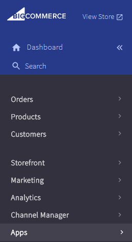
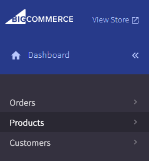
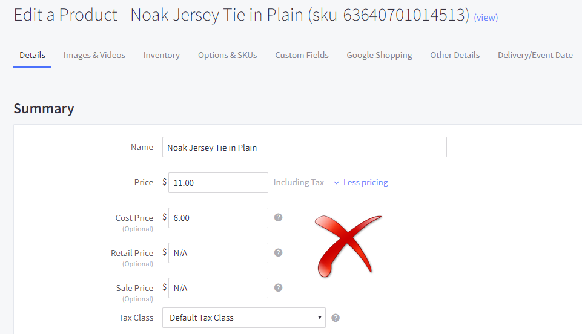

<?xml version="1.0" encoding="UTF-8"?><rss version="2.0"
	xmlns:content="http://purl.org/rss/1.0/modules/content/"
	xmlns:wfw="http://wellformedweb.org/CommentAPI/"
	xmlns:dc="http://purl.org/dc/elements/1.1/"
	xmlns:atom="http://www.w3.org/2005/Atom"
	xmlns:sy="http://purl.org/rss/1.0/modules/syndication/"
	xmlns:slash="http://purl.org/rss/1.0/modules/slash/"
	>

<channel>
	<title>Hike POS Software</title>
	<atom:link href="index.html" rel="self" type="application/rss+xml" />
	<link>http://hikeup.com/</link>
	<description></description>
	<lastBuildDate>Wed, 28 Mar 2018 07:18:49 +0000</lastBuildDate>
	<language>en</language>
	<sy:updatePeriod>
	hourly	</sy:updatePeriod>
	<sy:updateFrequency>
	1	</sy:updateFrequency>
	<generator>https://wordpress.org/?v=5.7.1</generator>

<image>
	<url>https://hikeup.com/wp-content/uploads/cropped-favicon-3-32x32.png</url>
	<title>Hike POS Software</title>
	<link>http://hikeup.com/</link>
	<width>32</width>
	<height>32</height>
</image> 
	<item>
		<title>Hike + BigCommerce + QuickBooks Online</title>
		<link>https://hikeup.com/blog/hike-quickbooks-online-bigcommerce/</link>
		
		<dc:creator><![CDATA[Hiren Savjiyani]]></dc:creator>
		<pubDate>Sun, 14 Jan 2018 10:44:23 +0000</pubDate>
				<category><![CDATA[Guides]]></category>
		<guid isPermaLink="false">https://hikeup.com/?p=24723</guid>

					<description><![CDATA[<p>Hike + BigCommerce + QuickBooks Online Over the last few years, we at Hike have remained steadfast in our pursuit in providing retailers worldwide with a sophisticated, all-in-one point-of-sale solution. Our efforts in building and enhancing Hike POS, we’ve created a system that is now used in over 65 countries. But our mission statement doesn’t&#8230; <a href="../../../hike-quickbooks-online-bigcommerce/index.html" class="more-link">Read more</a></p>
<p>The post <a rel="nofollow" href="../../../hike-quickbooks-online-bigcommerce/index.html">Hike + BigCommerce + QuickBooks Online</a> appeared first on <a rel="nofollow" href="../../../../index.html">Hike POS Software</a>.</p>
]]></description>
										<content:encoded><![CDATA[<h2 data-teal-gradient-color="teal-gradient-color">Hike + BigCommerce + QuickBooks Online</h2><hr class="hike nomargin">
<p class="margintop">Over the last few years, we at Hike have remained steadfast in our pursuit in providing retailers worldwide <span id="more-24723"></span>

with a sophisticated, all-in-one point-of-sale solution. Our efforts in building and enhancing Hike POS, we’ve created a system that is now used in over 65 countries. </p>
<p>But our mission statement doesn’t simply rest on being the best in retail point-of-sale, but also as a place where other applications can seamlessly fit in, helping businesses grow in ways previously thought impossible. </p>
<p>Which is where our integrations with <strong>QuickBooks Online</strong> and <strong>BigCommerce</strong> comes in. </p>
<p>Indeed, our partnership with QBO’s online accounting software and BigCommerce’s e-Commerce platform, is essential in building an ecosystem that manages all aspects of business operations. Our <strong>cloud</strong> solution to retailing means that through integration, customers can do things like: </p>
<ul>
<li>Synchronise in-store and online sales.</li> 
<li>Perform simple bank reconciliation between all sales and purchase orders.</li> 
<li>Edit and view customer and inventory data on the fly. </li>
<li>Track profitability to understand store performance and make smarter business decisions. </li>
</ul>
<p>We’ve been steadfast in our approach to providing retailers with the most complete experience, empowering our users to take their business to new heights. Which is why the 3-way integration between Hike + QuickBooks Online + BigCommerce, is the next stage in the retail revolution. </p>
<p>Whilst the process in integrating this 3-way sync is easy to do, there are several important steps to complete – both during the installation period and after – to ensure that the retail ecosystem is perfectly run. </p>
<p>To that end, we’ve compiled these 9 helpful tips, that’ll enable you to do just that. </p>
<h2>Disable existing QuickBooks Online &#038; BigCommerce integration</h2>
<p>If you’re an online retailer that has already integrated with QuickBooks Online and will now be using Hike to sell in-store, you will first need to deactivate the QBO integration before you can start your 3-way sync.</p>
<p>With Hike as your primary inventory and sales point of truth, we recommend that you disable any existing integrations to avoid doubling up on your sales data. </p>
<p>This can be performed on either your QBO or BigCommerce applications: </p>
<h3>QBO</h3>
<p>Using your QBO menu, select <strong>Apps</strong>. You will see a list of all your currently activated applications, with BigCommerce being one of them. Click <strong>Disconnect</strong> on the BigCommerce box. </p>
<p></p>
<p>This will open a new box which will ask you to specify a reason. Enter such information if you desire, before clicking <strong>Disconnect</strong>. </p>
<p></p>
<h3>BigCommerce</h3>
<p>To deactivate your integration from BigCommerce, select <strong>Apps</strong> from your BC dashboard which will roll out several more options, including <strong>My Apps</strong> which you will need to click.</p>
<p></p>
<p>From your QBO box, select <strong>Uninstall</strong>. This will automatically delete the integration. </p>
<p></p>
<p>Whatever application you choose to delete your QBO <-> Big Commerce integration from, doing so on one will automatically do the same for the other. </p>
<h2>Integrate BigCommerce with Hike, before integrating QuickBooks Online </h2>
<p>When beginning your complete ecosystem integration, we recommend that you first activate your e-Commerce platform, in this case BigCommerce, before your accounting software in QuickBooks. </p>
<p>This is because, by syncing BigCommerce first, you’ll be importing the latest and most accurate lists and information about the products that you already sell online into Hike. These include things like brands, tags and even the latest tax rates that you want applied for each item.</p>
<p>Find out how to <a href="https://support.hikeup.com/hc/en-us/articles/115001419614-How-to-integrate-BigCommerce-with-Hike" target="_blank">integrate BigCommerce</a> with Hike POS here </p>
<p>Ensure that you have mapped your Chart of Accounts to QBO correctly</p><p>When syncing QuickBooks Online, you’ll need to map the relevant payment, liability and expense accounts into Hike. </p>
<p>This means, using your Chart of Accounts in QBO to create the full list of accounts that you will need to sync to Hike. </p>
<p>Find out how to <a href="https://support.hikeup.com/hc/en-us/articles/333757007735-How-to-integrate-QuickBooks-Online-with-Hike" target="_blank">integrate QuickBooks</a> Online with Hike POS here </p>
<h2>Keep your in-store sales separate from your online sales</h2>
<p>As your 3-way integration enables you to sell in-store with Hike POS and online with BigCommerce, we recommend that you set up a new, dedicated <strong><a href="../../../../online-cash-register/index.html">cash register</a></strong> that will be used exclusively for sales made online. </p>
<p>The reason for this is that if you are using only a single register for both sales channels, consider that after closing a register in-store for a day, any online sales that occur after-hours will re-open the same register. As such, a unique register for online sales only, will enable a clear distinction between your online sales and in-store sales where your financial reporting – and even your marketing/product performance – is concerned. </p>
<p>Creating a new register on Hike is easy as well, simply head to your Store Setup -> Integrations, and click on <strong>+Add Cash Register</strong>. </p>
<p></p>
<p>The end result? Separate and transparent reporting when it comes to your in-store and online sales with BigCommerce.</p>
<p>For a more detailed overview on how to <a href="https://support.hikeup.com/hc/en-us/articles/333757011395-Setting-up-your-Cash-Register-in-Hike#AddingRemovingCashRegister" target="_blank">add a new cash register</a>, check out our support article here</p>
<p><strong>Note:</strong> By adding a new register to your Hike subscription, you may encounter addition monthly costs. </p>
<h2>Deleting a Product on Hike &#038; BigCommerce</h2>
<p>During your on-going use of the 3-way integration, there may be occasions where a certain product is out of circulation and you want to now remove it from your inventory entirely. This will need to be done on both Hike and BigCommerce.</p>
<p>To delete a product on Hike, simply select the Product from the Product List View, scroll to the bottom of the page and click <strong>Delete Product</strong>. </p>
<p>You can read more about <a href="https://support.hikeup.com/hc/en-us/articles/333757007115-Creating-Adding-Products-in-Hike" target="_blank">deleting, editing and adding products</a> here. </p>
<p></p>
<p>This will then be deleted from Hike, but you will still need to do the same on BigCommerce. </p>
<p>On your BC dashboard, select <strong>Products</strong>, which then open the View Products screen. </p>
<p></p>
<p>Using the box column located to the left of each product, mark the items that need to be deleted. Next, select the <strong>Garbage Bin icon</strong>, next to Add. </p>
<p></p>
<p>A confirmation pop-up will then appear, asking you whether you’re sure the product is to be removed permanently. Click <strong>OK</strong>. </p>
<p></p>
<h2>Setting Visibility for Products: In-store and/or E-Commerce</h2>
<p>When utilising both in-store and e-Commerce sales, it’s common for retailers to want a product to appear on one sales channel and not the other. </p>
<p>This is easily done on Hike, by simply selecting the sales channel/s you want to sell your product on. </p>
<p>Do this by selecting the product in question (Products -> Products via Hike menu), opening up the Product Edit screen. </p>
<p></p>
<p>In the Sales Channel section, you’ll notice two options: </p>
<ul>
	<li>&#8211;	Point of Sale</li>
	<li>&#8211;	E-Commerce</li>
</ul>
<p>Select Point of Sale if you want that product to appear on your Hike POS, in-store sales. Select E-Commerce if you want that product to appear on your BigCommerce online store. </p>
<p>Obviously, selecting one and not the other will only have that product available for purchase on the selected sales channel. </p>
<p></p>
<p><strong>Note:</strong> By selecting Visibility, you can also select which outlets that product will appear in – assuming you have more than one outlet. </p>
<p></p>
<h2>Using meta tags in Hike to help with online SEO</h2>
<p>Meta tags are snippets of text, that are used to describe a <a href="../../../../web-based-pos/index.html">web</a> page’s content for users. These tags do not appear anywhere on the page itself however, but rather are seen on the page’s code which helps tell search engines what the page is about. </p>
<p>Optimising your meta tags are useful in bringing your web-pages are little higher on the Search Engine Results Page (SERP), making it easier for potential to customers find your online store products. </p>
<p>If you are adding new products in Hike, make sure that you add meta tags so that when it syncs with an online store, the product page is immediately SEO friendly. </p>
<p>Action meta tags on all your products by selecting the (Products -> Products via Hike menu), opening the Product Edit screen. </p>
<p><strong>Note:</strong> When completing your integration for the first time, any products in BigCommerce will have their meta tags synced into Hike as well. </p>
<p>Head to the Meta section, clicking on the arrow to drop-down the box, where you’ll be able to fill out the following details:</p>
<p><strong>Meta Title</strong> – The meta title is the title text that will be shown of your product in search engine listings. </p>
<p><strong>Meta Keywords</strong> – The meta keywords tag is where you will enter all keywords of your product. Put simply, a user should be able to know exactly what your page is about when they read these keywords. </p>
<p><strong>Meta Description</strong> – The meta description tag is where you enter in a summary of your product, and therefore your web page. This is where you will describe the contents of your product and how they can help the consumer. However, note that your description should not be too long. </p>
<p><strong>Meta Slug</strong> – The meta slug is the exact URL address of the website, and will most commonly be the product title. </p>
<p></p>
<p><strong>Note:</strong> If you don’t see the box for Meta, ensure that you have selected e-Commerce in the Sales Channel box. </p>
<h2>Leave Empty Data in BigCommerce Price Fields</h2>
<p>When syncing products through BigCommerce and Hike, a problem that some users experience is errors with a product’s pricing. </p>
<p>Editing a product in BigCommerce, gives you 4 different pricing fields that can be edited: </p>
<ul>
<li>Price</li>
<li>Cost Price</li>
<li>Retail Price</li>
<li>Sale Price</li>
</ul>
<p>Other than Price and Cost price however, the fields are intended for products on BigCommerce only. Which means that to correctly integrate Hike and BigCommerce, you need to make sure</p>
<p>To ensure that no errors take place during the integration, make sure that only the Price field has any cost value attributed to it.</p>
<p>For the other fields, it is imperative that you do not enter things like ‘N/A’, or ‘None’ into those fields, doing so would lead to such errors.  </p>
<p>For example, entering ‘N/A’ for your Retail price and Sale Price in Big Commerce would be incorrect, if done so in the example below. </p>
<p></p>
<p>Instead, ensure that those fields are left completely blank. </p>
<p></p>
<h2>Duplicate Products: Hike &#038; BigCommerce &#038; QuickBooks Online </h2>
<p>Retailers will generally opt to perform 2-way syncing. This will enable them to sync their data to and from BigCommerce &#038; Hike, and again with QuickBooks Online &#038; Hike. Your product information will then be shared across the various platforms. </p>
<p>However, there are often instances where duplicate products can exist between QBO and BigCommerce, which will result in that product being replicated twice in Hike POS as well. </p>
<p>For example, if a product was created in QBO by your accounting team, and that same product then later created in BigCommerce by your online team, that will obviously result in duplicate products. If the products are only differentiated by a slightly different ‘Product Name’ spelling, then when synced with Hike, you will see the same product appear twice in your Point of Sale. </p>
<p>To counter this, ensure that the latest copy of the product is in the software that you are considering as to be the point of truth – generally this will be BigCommerce – when you are syncing. Otherwise, QBO will overwrite. </p>
<p><strong>Note:</strong> Any duplicate SKU or Product Names will however, create errors when synced to Hike. This will appear on your Sync Error Log. </p>
<p>Remember, if you have any questions surrounding how to setup your QBO &#038; BigCommerce integration with Hike, just get in touch with us. Our chat support team is here 24/7, to answer all your questions and they’ll be more than happy to help!</p><p>The post <a rel="nofollow" href="../../../hike-quickbooks-online-bigcommerce/index.html">Hike + BigCommerce + QuickBooks Online</a> appeared first on <a rel="nofollow" href="../../../../index.html">Hike POS Software</a>.</p>
]]></content:encoded>
					
		
		
			</item>
		<item>
		<title>Hike + Shopify + Xero</title>
		<link>https://hikeup.com/blog/hike-shopify-xero/</link>
		
		<dc:creator><![CDATA[Hiren Savjiyani]]></dc:creator>
		<pubDate>Wed, 03 Jan 2018 11:40:38 +0000</pubDate>
				<category><![CDATA[Guides]]></category>
		<guid isPermaLink="false">https://hikeup.com/?p=24740</guid>

					<description><![CDATA[<p>Hike + Shopify + Xero Online retailing has become a significant part of the retail industry in general, with businesses looking to expand their existing in-store offerings by bringing their products to a legion of new customers. As such it becomes necessary for retailers to look to a platform that is able to not only&#8230; <a href="../../../hike-shopify-xero/index.html" class="more-link">Read more</a></p>
<p>The post <a rel="nofollow" href="../../../hike-shopify-xero/index.html">Hike + Shopify + Xero</a> appeared first on <a rel="nofollow" href="../../../../index.html">Hike POS Software</a>.</p>
]]></description>
										<content:encoded><![CDATA[<h2 data-teal-gradient-color="teal-gradient-color">Hike + Shopify + Xero</h2><hr class="hike nomargin">
<p class="margintop">Online retailing has become a significant part of the retail industry in general, with businesses looking <span id="more-24740"></span>

to expand their existing in-store offerings by bringing their products to a legion of new customers. </p>
<p>As such it becomes necessary for retailers to look to a platform that is able to not only provide a POS system buy also integrate with leading e-Commerce and accounting platforms, in order to get an ecosystem that works concurrently with each other. </p>
<p>That’s where Hike POS comes in, where our integrations with Shopify and Xero, a dream-team if you will, has given retailers worldwide the confidence to manage all avenues of their business at the click of a button. </p>
<p>Working functionally and quickly together, the three applications all speak so well with each from a point of sale perspective, an accounting perspective and from an e-Commerce perspective. Fill out information in one, to see the data fire to the others in real-time. </p>
<p>Indeed, our partnership with Xero’s online accounting software and Shopify’s e-Commerce platform, is essential in building an ecosystem that manages all aspects of business operations. Our cloud solution to retailing means that through integration, customers can do things like: </p>
<ul>
<li>Synchronise in-store and online sales.</li> 
<li>Perform simple bank reconciliation between all sales and purchase orders. </li>
<li>Edit and view customer and inventory data on the fly. </li>
<li>Track profitability to understand store performance and make smarter business decisions. </li>
</ul>
<p>It’s all part of our approach to give retailers the most complete retail experience, making way for users to focus on other things.</p>
<p>Whilst the process in integrating this 3-way sync is easy to do, there are several things that users often need help with, during the installation period, which is why we’ve compiled these 10, tips and hints, that’ll help you get started. </p>
<h2>Disable existing Xero &#038; Shopify integration</h2>
<p>If you’re an online retailer that has already integrated with Xero and will now be using Hike to sell in-store, you will first need to deactivate the Xero integration before you can start your 3-way sync.</p>
<p>With Hike as your primary inventory and sales point of truth, we recommend that you disable any existing integrations to avoid doubling up on your sales data. </p>
<p>This can be performed on either your Xero or Shopify applications: </p>
<h3>Xero</h3>
<p>Using your Xero menu, select <strong>Settings</strong>, and then <strong>General Settings</strong>. </p>
<p>Scroll down to Connect, and click on Connected Apps. </p>
<p></p>
<p>Underneath Xero Connected Apps, you will see a list of apps that your Xero account has integrated with. Hike will be labelled as <strong>HIKEPOS</strong>. </p>
<p>Select <strong>DISCONNECT</strong>, and click on <strong>YES</strong> on the pop-up box asking you to confirm the deletion, and your Xero account will be deactivated from your Hike account. </p>
<p></p>
<h3>Shopify</h3>
<p>To deactivate your integration from Shopify, select Apps from your dashboard which will then show a list of your Installed Apps. </p>
<p></p>
<p>Select the trash bin next to your Hike POS app and then click on Delete on the pop-up, which asks you to confirm the deletion. </p>
<p>You can also enter a reason as to why you are deleting, before clicking Delete. </p>
<p></p>
<p>Whatever application you choose to delete your Xero <-> Shopify integration from, doing so on one will automatically do the same for the other. </p>
<h2>Integrate Shopify with Hike, before integrating with Xero</h2>
<p>When beginning your complete ecosystem integration, we recommend that you first activate your e-Commerce platform, in this case Shopify, before your accounting software in Xero. </p>
<p>This is because, by syncing Shopify first, you’ll be importing the latest and most accurate lists and information about the products that you already sell online into Hike. These include things like brands, tags and even the latest tax rates that you want applied for each item.</p>
<p>Find out how to <a href="https://support.hikeup.com/hc/en-us/articles/115001440354-How-to-integrate-Shopify-with-Hike" target="_blank">integrate Shopify</a> with Hike POS here </p>
<h2>Ensure that you have mapped your Chart of Accounts to Xero correctly</h2>
<p>When syncing Xero, you’ll need to map the relevant payment, liability and expense accounts into Hike. </p>
<p>This means, using your Chart of Accounts in Xero to create the full list of accounts that you will need to sync to Hike. </p>
<p>Find out how to <a href="https://support.hikeup.com/hc/en-us/articles/115002176293-How-to-integrate-Xero-with-Hike" target="_blank">integrate Xero</a> with Hike POS here </p>
<p>Keep your in-store sales separate from your online sales</p>
<p>As your 3-way integration enables you to sell in-store with Hike POS and online with Shopify, we recommend that you set up a new, dedicated <a href="../../../../online-cash-register/index.html">cash register</a> that will be used exclusively for sales made online. </p>
<p>The reason for this is that if you are using only a single register for both sales channels, consider that after closing a register in-store for a day, any online sales that occur after-hours will re-open the same register. As such, a unique register for online sales only, will enable a clear distinction between your online sales and in-store sales where your financial reporting – and even your marketing/product performance – is concerned. </p>
<p>Creating a new register on Hike is easy as well, simply head to your Store Setup -> Integrations, and click on <strong>+Add Cash Register</strong>. </p>
<p></p>
<p>The end result? Separate and transparent reporting when it comes to your in-store and online sales with Shopify.</p>
<p>For a more detailed overview on how to <a href="https://support.hikeup.com/hc/en-us/articles/333757011395-Setting-up-your-Cash-Register-in-Hike#AddingRemovingCashRegister" target="_blank">add a new cash register</a>, check out our support article here</p>
<p><strong>Note:</strong> By adding a new register to your Hike subscription, you may encounter addition monthly costs. </p>
<h2>Deleting a Product on Hike &#038; Shopify</h2>
<p>During your on-going use of the 3-way integration, there may be occasions where a certain product is out of circulation and you want to now remove it from your inventory entirely. This will need to be done on both Hike and Shopify.</p>
<p>To delete a product on Hike, simply select the Product from the Product List View, scroll to the bottom of the page and click <strong>Delete Product</strong>. </p>
<p>You can read more about <a href="https://support.hikeup.com/hc/en-us/articles/333757007115-Creating-Adding-Products-in-Hike" target="_blank">deleting, editing and adding products</a> here </p>
<p></p>
<p>This will then be deleted from Hike, but you will still need to do the same on Shopify. </p>
<p>On your Shopify dashboard, select Products, which then open the View Products screen. </p>
<p></p>
<p>Select the products </p>
<p></p>
<p>A confirmation pop-up will then appear, asking you whether you’re sure the product is to be removed permanently. Click <strong>OK</strong>. </p>
<p></p>
<h2>Setting Visibility for Products: In-store and/or E-Commerce</h2>
<p>When utilising both in-store and e-Commerce sales, it’s common for retailers to want a product to appear on one sales channel and not the other. </p>
<p>This is easily done on Hike, by simply selecting the sales channel/s you want to sell your product on. </p>
<p>Do this by selecting the product in question (Products -> Products via Hike menu), opening up the Product Edit screen. </p>
<p></p>
<p>In the Sales Channel section, you’ll notice two options: </p>
<ul>
	<li>Point of Sale</li>
	<li>E-Commerce</li>
</ul>
<p>Select Point of Sale if you want that product to appear on your Hike POS, in-store sales. Select E-Commerce if you want that product to appear on your Shopify online store. </p>
<p>Obviously, selecting one and not the other will only have that product available for purchase on the selected sales channel. </p>
<p></p>
<p><strong>Note:</strong> By selecting Visibility, you can also select which outlets that product will appear in – assuming you have more than one outlet. </p>
<p></p>
<h2>Using meta tags in Hike to help with online SEO</h2>
<p>Meta tags are snippets of text, that are used to describe a web page’s content for users. These tags do not appear anywhere on the page itself however, but rather are seen on the page’s code which helps tell search engines what the page is about. </p>
<p>Optimising your meta tags are useful in bringing your web-pages are little higher on the Search Engine Results Page (SERP), making it easier for potential to customers find your online store products. </p>
<p>If you are adding new products in Hike, make sure that you add meta tags so that when it syncs with an online store, the product page is immediately SEO friendly. </p>
<p>Action meta tags on all your products by selecting the (Products -> Products via Hike menu), opening the Product Edit screen. </p>
<p><strong>Note:</strong> When completing your integration for the first time, any products in Shopify will have their meta tags synced into Hike as well. </p>
<p>Head to the Meta section, clicking on the arrow to drop-down the box, where you’ll be able to fill out the following details:</p>
<p><strong>Meta Title</strong> – The meta title is the title text that will be shown of your product in search engine listings. </p>
<p><strong>Meta Keywords</strong> – The meta keywords tag is where you will enter all keywords of your product. Put simply, a user should be able to know exactly what your page is about when they read these keywords. </p>
<p><strong>Meta Description</strong> – The meta description tag is where you enter in a summary of your product, and therefore your <a href="../../../../web-based-pos/index.html">web</a> page. This is where you will describe the contents of your product and how they can help the consumer. However, note that your description should not be too long. </p>
<p>Meta Slug – The meta slug is the exact URL address of the website, and will most commonly be the </p>
<p></p>
<p><strong>Note:</strong> If you don’t see the box for Meta, ensure that you have selected e-Commerce in the Sales Channel box. </p>
<h2>Duplicate Products: Hike &#038; Shopify &#038; Xero </h2>
<p>Retailers will generally opt to perform 2-way syncing. This will enable them to sync their data to and from Shopify &#038; Hike, and again with Xero &#038; Hike. Your product information will then be shared across the various platforms. </p>
<p>However, there are often instances where duplicate products can exist between Xero and Shopify, which will result in that product being replicated twice in Hike POS as well. </p>
<p>For example, if a product was created in Xeroby your accounting team, and that same product then later created in Shopify by your online team, that will obviously result in duplicate products. If the products are only differentiated by a slightly different ‘Product Name’ spelling, then when synced with Hike, you will see the same product appear twice in your Point of Sale. </p>
<p>To counter this, ensure that the latest copy of the product is in the software that you are considering as to be the point of truth – generally this will be Shopify– when you are syncing. Otherwise, Xero will overwrite. </p>
<p><strong>Note:</strong> Any duplicate SKU or Product Names will however, create errors when synced to Hike. This will appear on your Sync Error Log. </p>
<p>Remember, if you have any questions surrounding how to setup your Xero &#038; Shopify integration with Hike, just get in touch with us. Our chat support team is here 24/7, to answer all your questions and they’ll be more than happy to help!</p>
<p>The post <a rel="nofollow" href="../../../hike-shopify-xero/index.html">Hike + Shopify + Xero</a> appeared first on <a rel="nofollow" href="../../../../index.html">Hike POS Software</a>.</p>
]]></content:encoded>
					
		
		
			</item>
	</channel>
</rss>
